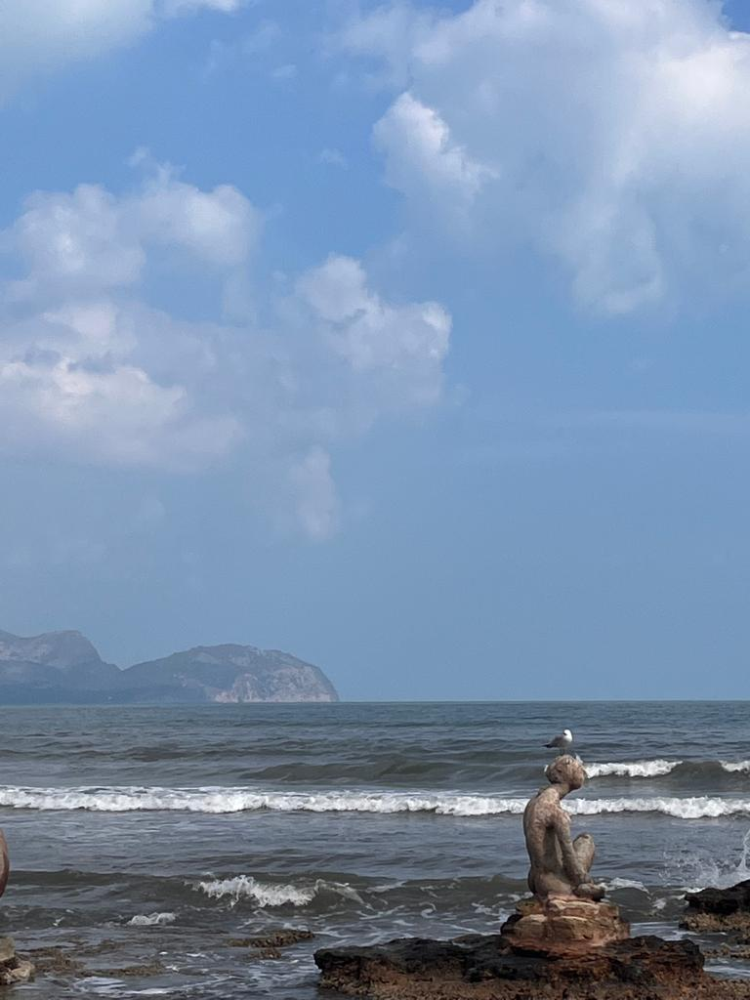
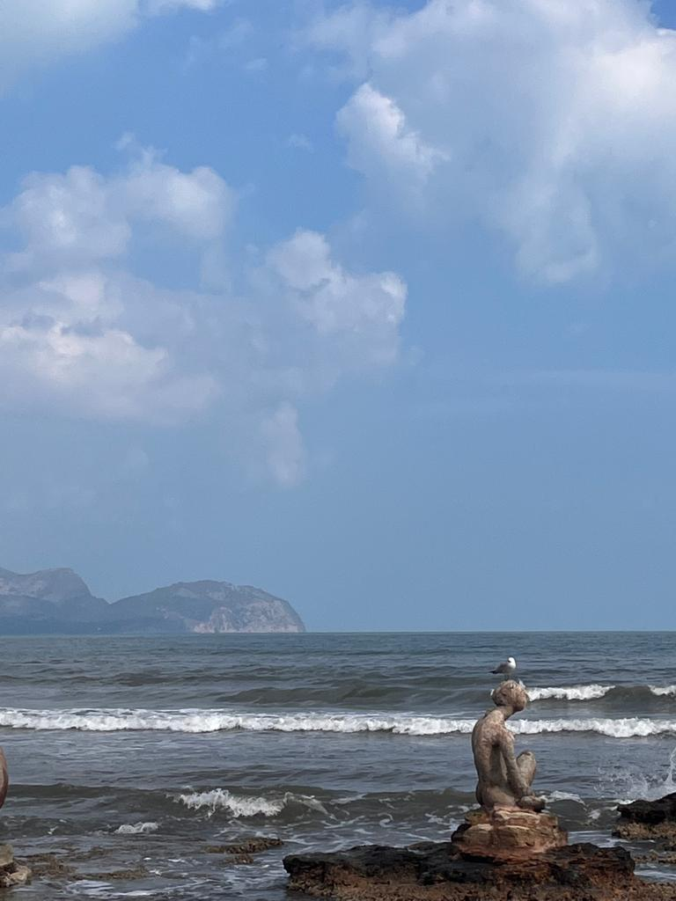
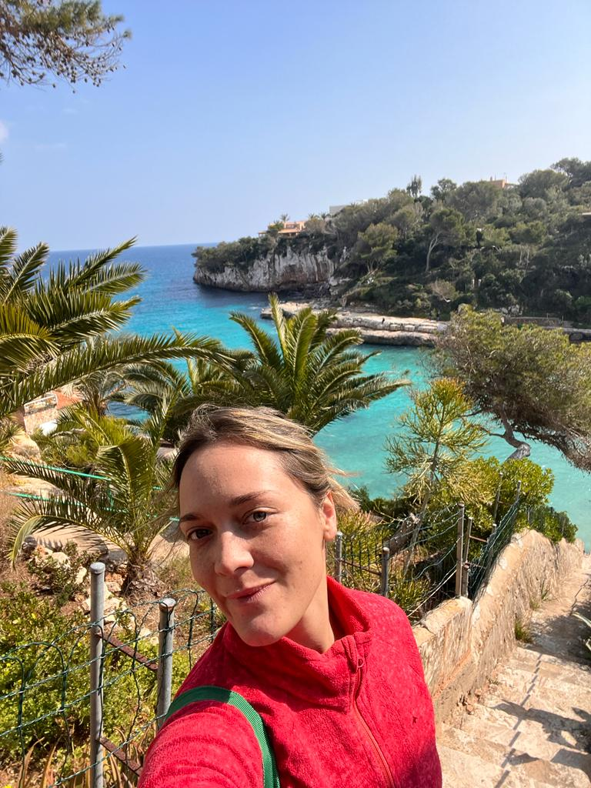

Can Picafort
 

En el centro de Can Picafort, nos encontramos con Plaza Cervantes. La misma tiene instaladas estatutas, que fueron creadas por el artista Joan Bennassar. Las estatuas, mayoritariamente femeninas, unas diosas y otras hadas, evocan las civilizaciones mediterráneas antiguas. El nombre de la muestra es Ports de alga marina, y es muy recomendable pasar por allí para verlas.
Cala Llombards
Deslumbrante cala en el sureste de Mallorca, cerca de la pequeña localidad de Es Llombards y a unos 10 kilómetros de Santanyí.
Ir arriba